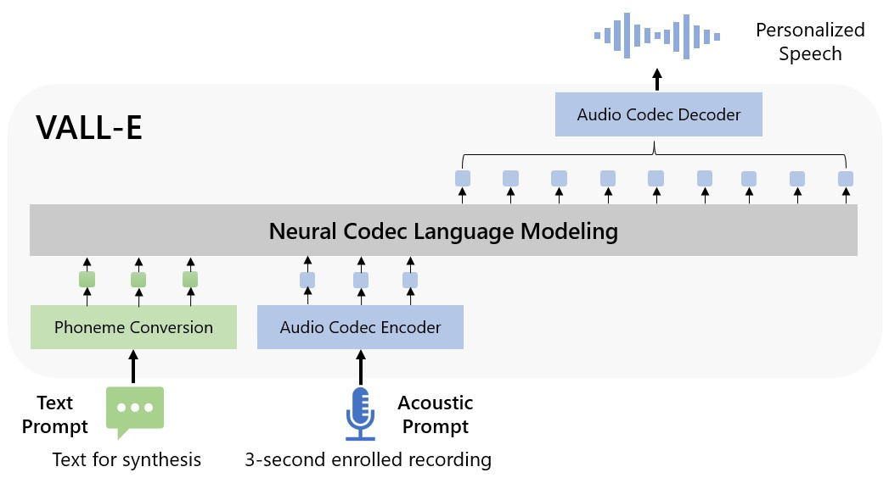
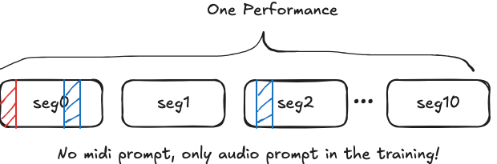

Step1: Fine-Tuning the Encodec with the ATEPP audios

Figure 1: Architecture of the original Encodec model.
I followed the provided training pipelines in the audiocraft
library and fine-tuned the compression model MusicGen_Encodec_32khz with the ATEPP dataset.
Around 7000 performances (~700hs) were used for training. The model was fine-tuned for 40 epochs, taking around 7 hours using two A100 gpus.
More details from the paper:
"We use a non-causal five layers EnCodec model for 32 kHz monophonic audio with a stride of 640,
resulting in a frame rate of 50 Hz, and an initial hidden size of 64, doubling
at each of the model's five layers. The embeddings are quantized with a RVQ with four quantizers,
each with a codebook size of 2048. We follow Défossez et al. [2022] to train the model on one-second
audio segments cropped at random in the audio sequence."
I randomly selected five reconstructed samples of 10s from the test set as listening examples.
| Source |
Sample A |
Sample B |
Sample C |
Sample D |
Sample E |
|---|---|---|---|---|---|
| Groundtruth |
|
|
|
|
|
| Encodec (w/o fine-tuning) |
|
|
|
|
|
| Encodec (fine-tuned) |
|
|
|
|
|
Step2: Training the Vall-E Model with Midis

Figure 2: Architecture of the original Vall-E model.
Following our last discussion, I have tried two different ways to improve the performance of the Midi-VaLLE model:
- increase the size of training data (Using a cleaned ATEPP version, 8862 performances,
581/73h/73h243/30/30h) - shorten the length of each segment (from 15-20s to 3-10s, based on the number notes in the segment)
- prompt the training with utterance from next/previous segment of the same performance (similar to the paper)

- Groundtruth: The original audio segment from the performance.
- Encodec-FT: Audio reconstructed by the 32khz Encodec model, which was fine-tuned as previously described.
- Vall-E(Encodec-FT)-1: Audio generated by the VALLE model with the first 1-3s of the same segment as prompt.
- Vall-E(Encodec-FT)-2: Audio generated by the VALLE model with the randomly selected 1-3s of another (next/previous) segment as prompt
| Source |
Seg1: 00253_2_32 |
Seg2: 07804_28_4 |
Seg3: 06978_11_27 |
Seg4: 04287_9_23 |
|---|---|---|---|---|
| Groundtruth |
|
|
|
|
| Encodec-FT |
|
|
|
|
| Vall-E(Encodec-FT)-1 |
|
|
|
|
| Vall-E(Encodec-FT)-2 |
|
|
|
|
When training the Valle model, the MIDI files were first tokenized using a method similar to the one used in the score-to-audio project.
The unoffical implementation of the Vall-E was trained with prompts from the first N (randemly selected, N < 3) seconds of the current uttrance, which is different from the way described in the paper (prompted with segments from other utterace by the same speaker).